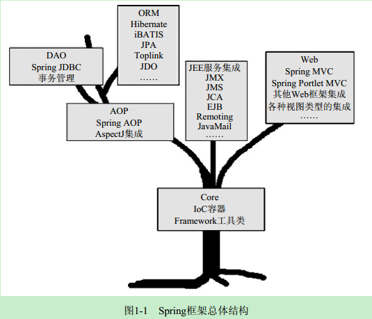
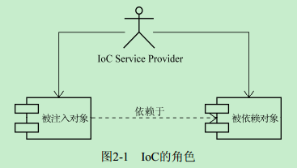
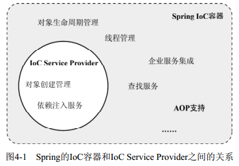
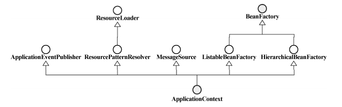
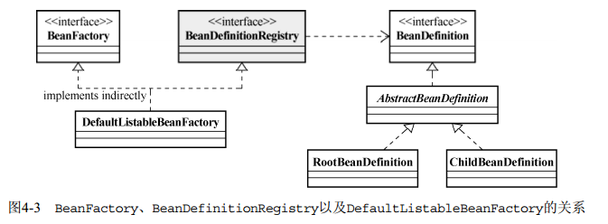
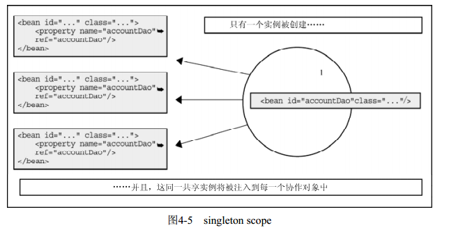
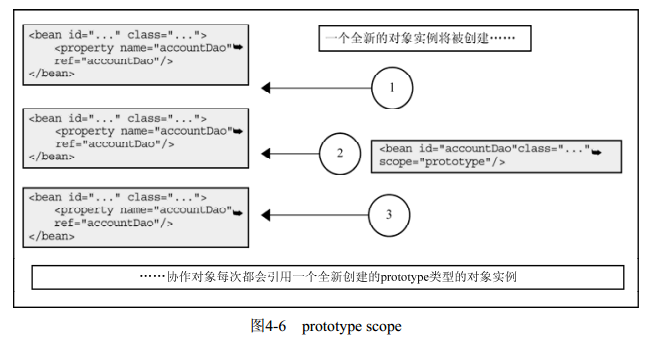

Spring 揭秘
[TOC]

IOC容器基本概念
全称为Inversion of Control，中文通常翻译为“控制反转”，它还有一个别名叫做依赖注入（Dependency Injection）。好莱坞原则“Don’t call us, we will call you.”
注意:本章更多的是将IoC和依赖注入看作等同的概念进行讲解。但是，在这一点上可能存在不同的观点，比如Expert Spring MVC and Web Flow和Expert One-on-One J2EE without EJB等书中都将依赖注入看作是IoC的一种方式。

在IoC的场景中，二者之间通过IoC Service Provider来打交道，所有的被注入对象和依赖对象现在由IoC Service Provider统一管理。被注入对象需要什么，直接跟IoC Service Provider招呼一声，后者就会把相应的被依赖对象注入到被注入对象中，从而达到IoC Service Provider为被注入对象服务的目的。IoC Service Provider在这里就是通常的IoC容器所充当的角色。从被注入对象的角度看，与之前直接寻求依赖对象相比，依赖对象的取得方式发生了反转，控制也从被注入对象转到了IoC Service Provider那里。
其实IoC就这么简单！原来是需要什么东西自己去拿，现在是需要什么东西就让别人送过来。
IoC是一种可以帮助我们解耦各业务对象间依赖关系的对象绑定方式！
IoC Service Provider
Spring的IoC容器就是一个提供依赖注入服务的IoC Service Provider。
IoC Service Provider的职责相对来说比较简单，主要有两个：业务对象的构建管理和业务对象间的依赖绑定。
- 业务对象的构建管理：在IoC场景中，业务对象无需关心所依赖的对象如何构建如何取得，IoC Service Provider需要将对象的构建逻辑从客户端对象那里剥离出来，以免这部分逻辑污染业务对象的实现。
- 业务对象间的依赖绑定：这是核心，IoC Service Provider通过结合之前构建和管理的所有业务对象，以及各个业务对象间可以识别的依赖关系，将这些对象所依赖的对象注入绑定，从而保证每个业务对象在使用的时候，可以处于就绪状态。
当前流行的IoC Service Provider产品使用的注册对象管理信息的方式主要有以下几种：直接编码方式、配置文件方式、元数据方式。
Spring 的IoC容器至BeanFactory
Spring的IoC容器是一个提供IoC支持的轻量级容器，除了基本的IoC支持，它作为轻量级容器还提供了IoC之外的支持。如在Spring的IoC容器之上，Spring还提供了相应的AOP框架支持、企业级服务集成等服务。Spring的IoC容器和IoC Service Provider所提供的服务之间存在一定的交集，二者的关系如下图所示。

Spring提供了两种容器类型：BeanFactory和ApplicationContext。
- BeanFactory。基础类型IoC容器，提供完整的IoC服务支持。如果没有特殊指定，默认采用延迟初始化策略（lazy-load）。只有当客户端对象需要访问容器中的某个受管对象的时候，才对该受管对象进行初始化以及依赖注入操作。所以，相对来说，容器启动初期速度较快，所需要的资源有限。对于资源有限，并且功能要求不是很严格的场景，BeanFactory是比较合适的IoC容器选择。
- ApplicationContext。ApplicationContext在BeanFactory的基础上构建，是相对比较高级的容器实现，除了拥有BeanFactory的所有支持，ApplicationContext还提供了其他高级特性，比如事件发布、国际化信息支持等。ApplicationContext所管理的对象，在该类型容器启动之后，默认全部初始化并绑定完成。所以，相对于BeanFactory来说，ApplicationContext要求更多的系统资源，同时，因为在启动时就完成所有初始化，容器启动时间较之BeanFactory也会长一些。在那些系统资源充足，并且要求更多功能的场景中，ApplicationContext类型的容器是比较合适的选择。
BeanFactory和ApplicationContext的继承关系图：

作为Spring提供的基本的IoC容器，BeanFactory可以完成作为IoC Service Provider的所有职责，包括业务对象的注册和对象间依赖关系的绑定。
BeanFactory接口只定义如何访问容器内管理的Bean的方法，各个BeanFactory的具体实现类负责具体Bean的注册以及管理工作。BeanDefinitionRegistry接口定义抽象了Bean的注册逻辑。通常情况下，具体的BeanFactory实现类会实现这个接口来管理Bean的注册。他们之间的关系如下图：

public static void main(String[] args)
{
DefaultListableBeanFactory beanRegistry = new DefaultListableBeanFactory();
BeanFactory container = (BeanFactory)bindViaCode(beanRegistry);
FXNewsProvider newsProvider = (FXNewsProvider)container.getBean(" ");
newsProvider.getAndPersistNews();
}
public static BeanFactory bindViaCode(BeanDefinitionRegistry registry)
{
AbstractBeanDefinition newsProvider=
new RootBeanDefinition(FXNewsProvider.class,true);
AbstractBeanDefinition newsListener =
new RootBeanDefinition(DowJonesNewsListener.class,true);
AbstractBeanDefinition newsPersister =
new RootBeanDefinition(DowJonesNewsPersister.class,true);
// 将bean定义注册到容器中
registry.registerBeanDefinition("djNewsProvider", newsProvider);
registry.registerBeanDefinition("djListener", newsListener);
registry.registerBeanDefinition("djPersister", newsPersister);
// 指定依赖关系
// 1. 可以通过构造方法注入方式
ConstructorArgumentValues argValues = new ConstructorArgumentValues();
argValues.addIndexedArgumentValue(0, newsListener);
argValues.addIndexedArgumentValue(1, newsPersister);
newsProvider.setConstructorArgumentValues(argValues);
// 2. 或者通过setter方法注入方式
MutablePropertyValues propertyValues = new MutablePropertyValues();
propertyValues.addPropertyValue(new ropertyValue("newsListener",newsListener));
propertyValues.addPropertyValue(new PropertyValue("newPersistener",newsPersister));
newsProvider.setPropertyValues(propertyValues);
// 绑定完成
return (BeanFactory)registry;
}
Bean的scope
配置中的bean定义可以看作是一个模板，容器会根据这个模板来构造对象。但是要根据这个模板构造多少对象实例，又该让这些构造完的对象实例存活多久，则由容器根据bean定义的scope语意来决定。
singleton
标记为拥有singleton scope的对象定义，在Spring的IoC容器中只存在一个实例，所有对该对象的引用将共享这个实例。该实例从容器启动，并因为第一次被请求而初始化之后，将一直存活到容器退出，也就是说，它与IoC容器“几乎”拥有相同的“寿命”。

需要注意的一点是，不要因为名字的原因而与GoF所提出的Singleton模式相混淆，二者的语意是不同的： 标记为singleton的bean是由容器来保证这种类型的bean在同一个容器中只存在一个共享实例；而Singleton模式则是保证在同一个Classloader中只存在一个这种类型的实例。
通常情况下，如果你不指定bean的scope，singleton便是容器默认的scope。
prototype
针对声明为拥有prototype scope的bean定义，容器在接到该类型对象的请求的时候，会每次都重新生成一个新的对象实例给请求方。虽然这种类型的对象的实例化以及属性设置等工作都是由容器负责的，但是只要准备完毕，并且对象实例返回给请求方之后，容器就不再拥有当前返回对象的引用，请求方需要自己负责当前返回对象的后继生命周期的管理工作，包括该对象的销毁。也就是说，容器每次返回给请求方一个新的对象实例之后，就任由这个对象实例“自生自灭”了。

request、session和global session
Spring容器，即XmlWebApplicationContext会为每个HTTP请求创建一个全新的RequestProcessor对象供当前请求使用，当请求结束后，该对象实例的生命周期即告结束。request可以看作prototype的一种特例，除了场景更加具体之外，语意上差不多。
Spring容器会为每个独立的session创建属于它们自己的全新的UserPreferences对象实例。与request相比，除了拥有session scope的bean的实例具有比request scope的bean可能更长的存活时间，其他方面真是没什么差别。
global session只有应用在基于portlet的Web应用程序中才有意义，它映射到portlet的global范围的session。如果在普通的基于servlet的Web应用中使用了这个类型的scope，容器会将其作为普通的session类型的scope对待。